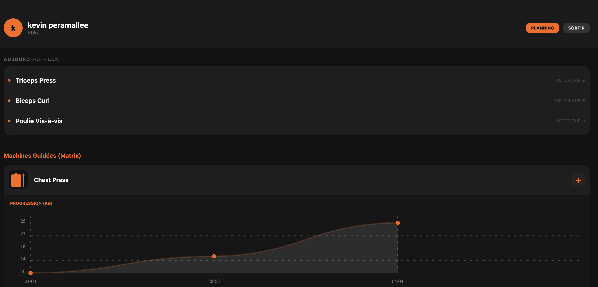
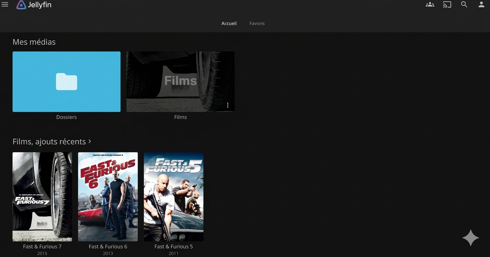

trackersport
Application mobile native de suivi de performance. Architecture TypeScript, Firebase et visualisation de données de progression.
Voir le Code
Mobile MVP
Développeur Fullstack | Web / Mobile
Fort d'une expérience de plus de 10 ans dans des environnements techniques exigeants, je suis un développeur passionné par la conception de solutions web et mobiles fiables.
Mon parcours hybride me permet d'allier une solide maîtrise des systèmes et réseaux (Active Directory, TCP/IP) à des compétences modernes en React Native, TypeScript et Ruby on Rails.
Diplômé du Wagon, je mets ma rigueur et ma capacité d'analyse au service de projets innovants.
Découvrez mes projets, de l'application mobile au serveur domestique optimisé.

Application mobile native de suivi de performance. Architecture TypeScript, Firebase et visualisation de données de progression.

Mise en place d'une infrastructure de streaming Jellyfin sur MacBook Air M1. Optimisation via Amphetamine.

Site vitrine pour une artisane de laine d'alpaga. Intégration de carrousels JS personnalisés.

Ma présentation professionnelle codée en pur HTML/CSS pour une rapidité maximale.

Application de gestion de tâches et d'organisation avec architecture MVC et PostgreSQL.